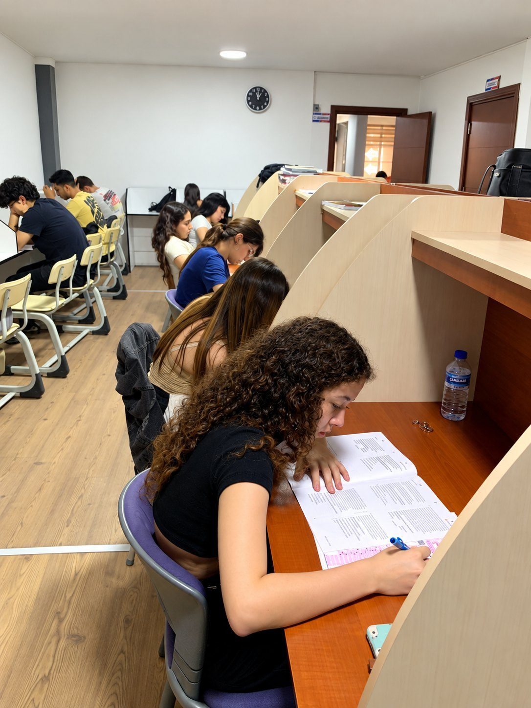
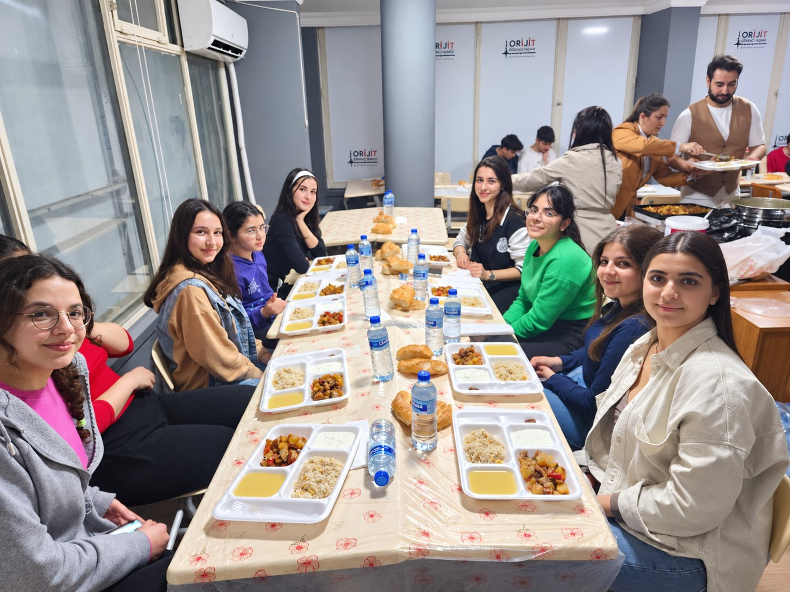

Etüt & Bireysel Çalışma
Odaklı çalışma alanlarıyla öğrencinin kendi temposunu sürdürmesi desteklenir.
Başarı hikâyelerini sadece bir puan olarak değil; düzenli çalışma, doğru rehberlik ve sürdürülebilir gelişimin sonucu olarak görüyoruz.
Demo veri — gerçek kurum sonuçlarıyla güncellenecek.
Demo veri — yerleşim sonuçları için örnek alan.
Demo veri — yıllık başarı hikâyeleri için.
Program bazlı ölçme-değerlendirme sistemi.
| Öğrenci | Program | Sonuç | Yerleşim / Derece |
|---|---|---|---|
| Örnek Öğrenci 01 | TYT & AYT | Sayısal | İlk 1.000 |
| Örnek Öğrenci 02 | YKS | %1 Dilim | Nitelikli Lise |
| Örnek Öğrenci 03 | Mezun | Sayısal | Tıp Fakültesi |
| Örnek Öğrenci 04 | TYT & AYT | Eşit Ağırlık | Hukuk Fakültesi |

Odaklı çalışma alanlarıyla öğrencinin kendi temposunu sürdürmesi desteklenir.

Akademik süreci sosyal birliktelik ve aidiyet duygusuyla tamamlayan etkinlikler.

Motivasyon, dayanışma ve ortak hedef kültürü öğrencinin sürecini güçlendirir.
9. sınıftan mezun grubuna kadar YKS yolculuğunu; doğru program, akşam kampları, etütler ve düzenli rehberlikle birlikte planlayalım.
Program, seviye ve çalışma düzeni için kısa bir tanışma görüşmesi planlayın.
Görüşme planla